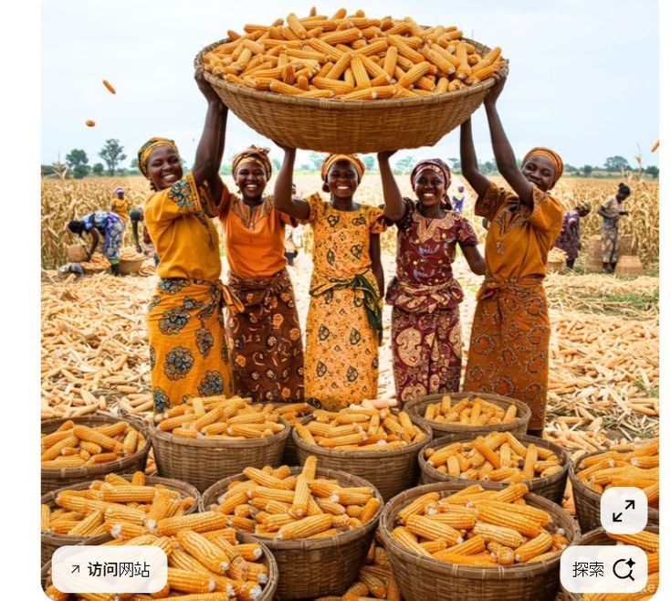
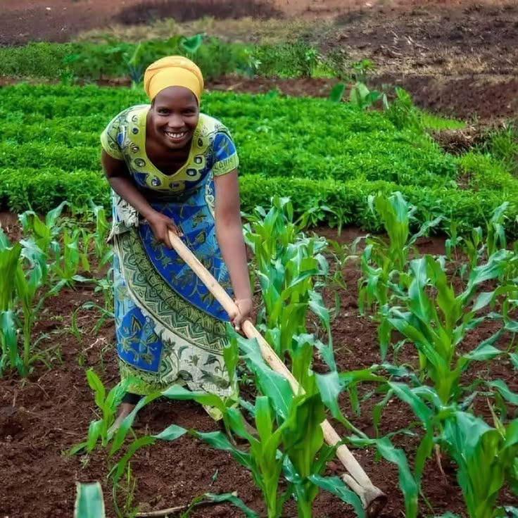
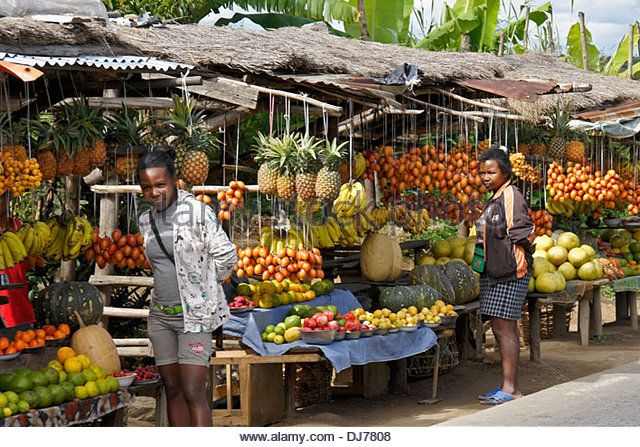

Récolte record de maïs 2024
Les producteurs de la région Maritime ont obtenu un rendement exceptionnel cette saison...
Lire la suiteValorisons nos produits locaux pour un développement durable
Nous contacterProducteurs membres
Régions couvertes
Produits proposés
Années d'expérience

Les producteurs de la région Maritime ont obtenu un rendement exceptionnel cette saison...
Lire la suite
Nouvelle session de formation pour 50 jeunes agriculteurs sur les techniques modernes...
Lire la suite
AGRI-TOGO participe à la grande foire agricole internationale de Lomé...
Lire la suite